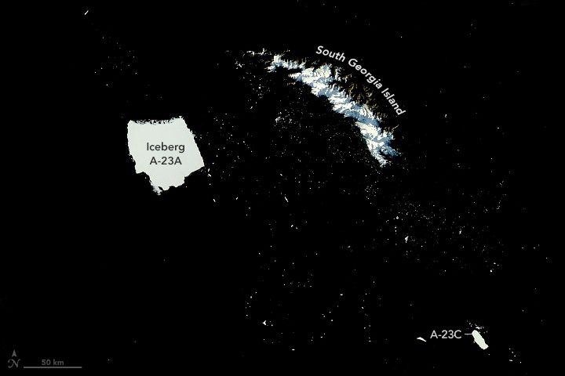

Antarctic Iceberg Loses Its Edge
An iceberg that has been stuck for several months in the shallow waters off the island of South Georgia is losing its edge. Though it is still the largest iceberg currently at sea, waves and other seasonal weather effects are chipping away at its sides and shrinking its visible surface area.
The MODIS (Moderate Resolution Imaging Spectroradiometer) on NASA’s Aqua satellite captured this image of the berg, named A-23A, on May 3, 2025. The huge berg was parked less than 100 kilometers (60 miles) off South Georgia, which is part of a remote island group in the South Atlantic Ocean located northeast of the Antarctic Peninsula and well east of the tip of South America.
The berg’s underside is most likely lodged on a shallow underwater shelf around South Georgia, known in the past to have snagged several Antarctic icebergs on their northward drift into warmer South Atlantic waters. Satellite images show that the iceberg has remained at a standstill since at least early March 2025.
Though its position remained largely unchanged, the berg’s surface area has declined considerably in just two months. According to iceberg data from the U.S. National Ice Center (USNIC), A-23A lost more than 360 square kilometers (140 square miles) between March 6 and May 3—an area roughly twice the size of Washington, D.C.
Thousands of iceberg pieces litter the ocean surface near the main berg, creating a scene reminiscent of a dark starry night. Though these fragments appear small in the image, many measure at least a kilometer across and would pose a risk to ships. One fragment, A-23C, was large enough to be named by USNIC after it broke from A-23A’s southern side in mid-April.
Such iceberg shedding has occurred to some extent throughout A-23A’s journey, even as it spun in a gyre in the Drake Passage in 2024. However, there are signs that the iceberg is becoming increasingly fragile. Notice the strip of icy debris along its northern side, which is the remnants of a sudden “edge wasting” event triggered in part by several days of warm, sunny weather. At nearly 55°S latitude, the berg is well outside the coldest waters around Antarctica that helped preserve it since it calved from the Filchner Ice Shelf in 1986.
Edge wasting is one of three types of iceberg breakup observed by scientists using satellite images. It occurs when small pieces of ice calve from numerous places along an iceberg’s edge, reducing the berg’s area while preserving its general shape. Icebergs can also fracture into several large pieces or completely disintegrate.
Whichever way A-23A continues to crumble, the fate of this berg is all but certain. More than 90 percent of icebergs around Antarctica follow a similar route, entering the clockwise-flowing current of the Weddell Gyre off East Antarctica, shooting north along the Antarctic Peninsula, and crossing the Drake Passage into warmer South Atlantic waters. All of them eventually melted away.